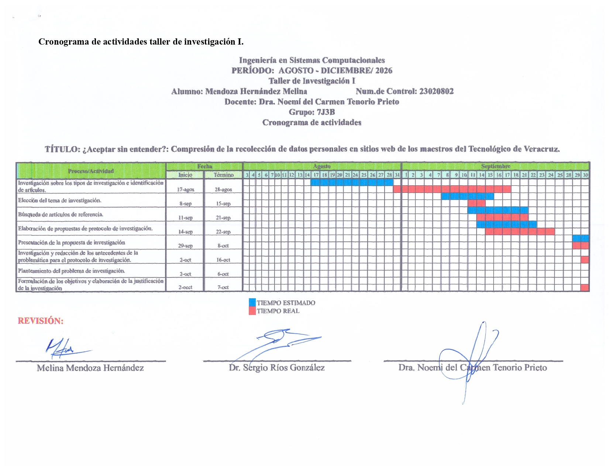
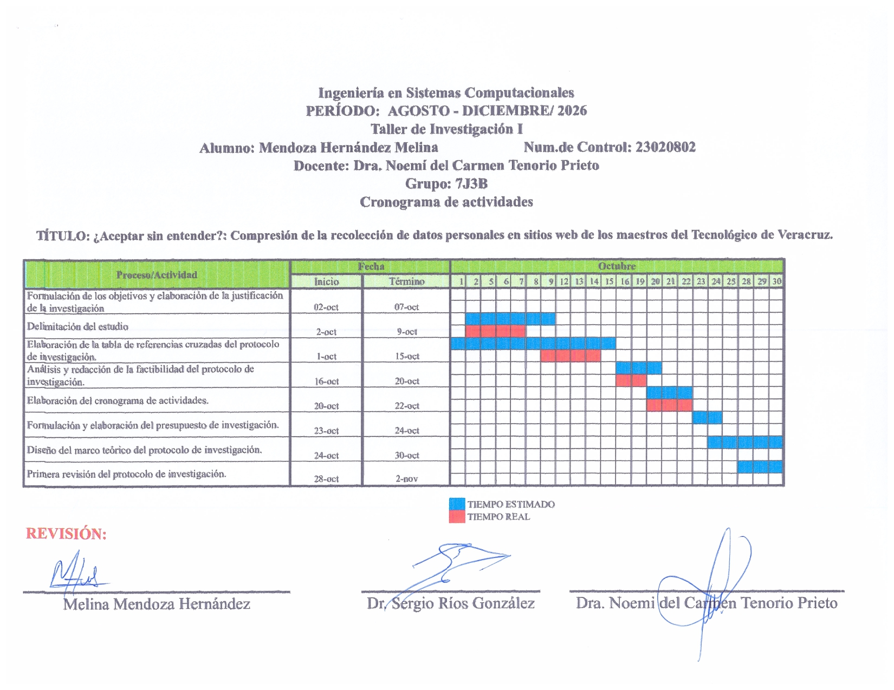
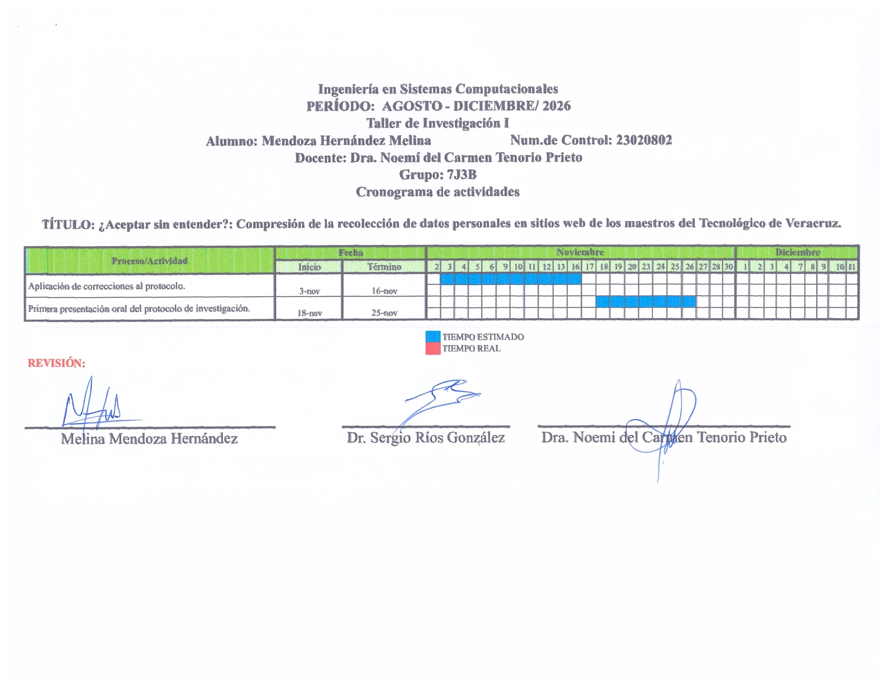
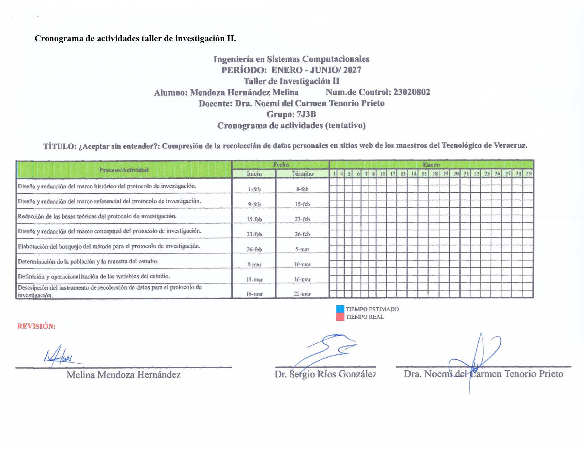
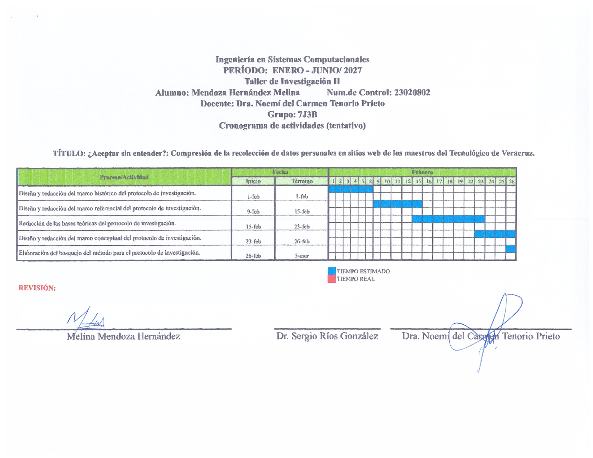
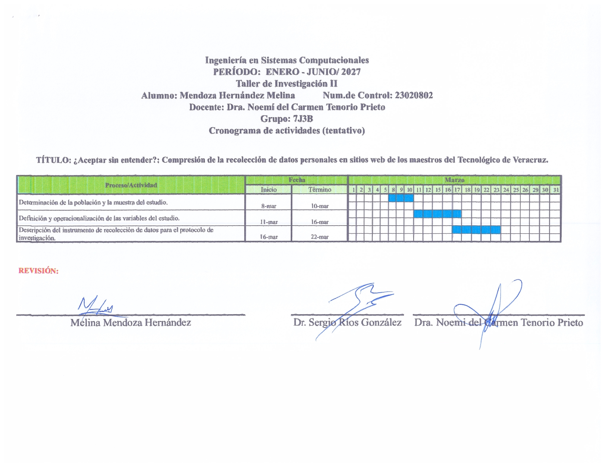
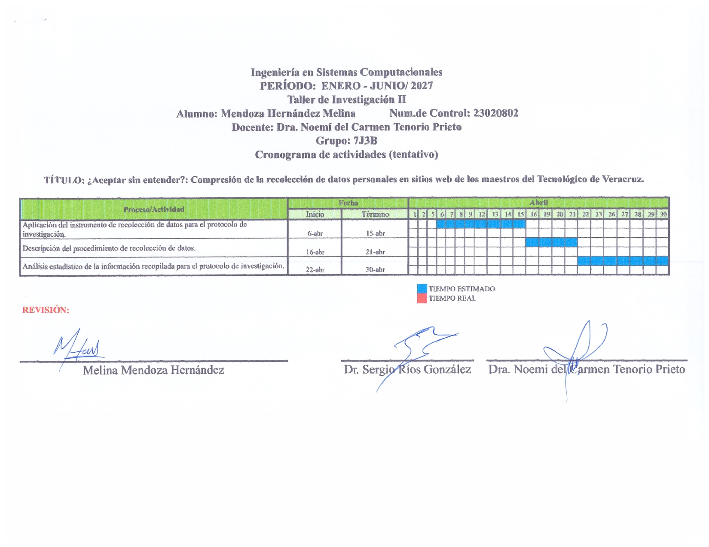
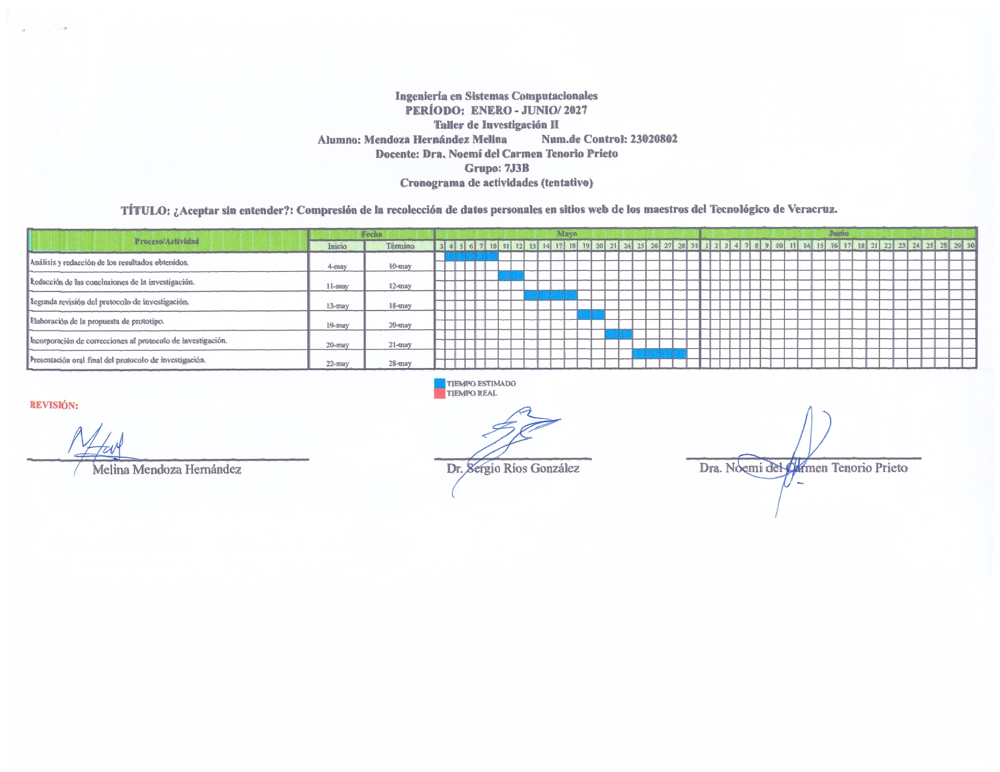

Semblanza
Estudiante de Ingeniería en Sistemas Computacionales en el Instituto Tecnológico de Veracruz. Se especializa en el desarrollo de sistemas embebidos, procesamiento de datos y arquitectura de bases de datos relacionales. Como parte de su formación académica y técnica, ha participado en proyectos de investigación enfocados en el impacto social de la tecnología, tales como el análisis de la comprensión de los adultos mayores frente a los avisos de privacidad digital. Asimismo, cuenta con experiencia en la creación de plataformas de predicción económica y en el desarrollo de sistemas para la gestión de nómina.
Formación académica
𖦹 Ingeniería en Sistemas Computacionales
𖦹 Instituto Tecnológico de Veracruz 𖦹 Número de control: 23020802
Proyectos destacados
𖦹 FoodNet:Plataforma web impulsada por una arquitectura de Inteligencia Artificial, diseñada para la predicción proactiva de precios. Transforma datos históricos en inteligencia estratégica, para la anticipación de choques de mercado antes de que afecten al consumidor final.
𖦹 Foro estudiantil: Programa diseñado para facilitar la comunicación académica y el intercambio de recursos entre la comunidad estudiantil. Integra gestión de usuarios, hilos de discusión categorizados y herramientas de moderación de contenido.
𖦹 Analizador SHIMMA++: Analizador léxico, sintáctico y semántico que incluye la generación de código intermedio (código de tres direcciones), desarrollado a la medida para un lenguaje de programación propio.
𖦹 Sistema de gestión de nómina: Base de datos relacional implementada en PostgreSQL y MySQL. Su arquitectura está estructurada mediante el uso de vistas, particionamiento, segmentación de datos y esquemas multi-instancia para su administración.
𖦹 ¿Aceptar sin entender?: Estudio sobre la comprensión de los avisos de privacidad y cookies en docentes del Instituto Tecnológico de Veracruz
Áreas de intéres
Desarrollo de software, diseño y administración de bases de datos relacionales, arquitectura de redes, compiladores y modelado 3D.Habilidades técnicas
𖦹 Herramientas: Pycharm, GoogleColab, Visual Studio Code, Netbeans, Cisco Packet Tracer, GitHub, Fusion360, Tinkercad, Arduino IDE
𖦹 Lenguajes: Python, Java, SQL (PostgreSQL· MySQL), HTML
Contactos
𖦹 Correo institucional: L23020802@veracruz.tecnm.mx
𖦹 Docente de la asignatura: Dra. Noemí del Carmen Tenorio Prieto
𖦹 Asesor del protocolo: Dr. Sergio Ríos González
Cronograma de Actividades
Taller de Investigación I



Taller de Investigación II




